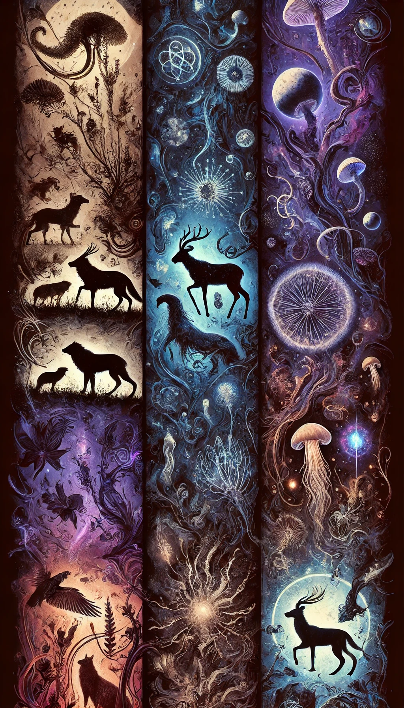

Overview

The living tapestry of Arcanum Mechanica is woven from countless, diverse forms of life—all imbued with the ancient, chaotic mana that birthed this universe. Species here are organized into several fundamental groups, each reflecting both conventional biological kingdoms and the unique, arcane influences at work. These classifications form the foundation for understanding the intricate ecosystems and interactions in this dark, unforgiving realm.
Sentari¶
Sentari encompasses all beings in Arcanum Mechanica that possess true sapience, self-awareness, and the capacity for abstract thought. Unlike Animari, which includes all animal life regardless of intelligence, Sentari is reserved for those who demonstrate reasoning, communication, and societal development. This category spans a wide range of origins, from biological creatures to artificial constructs and even spectral entities. Whether shaped by evolution, magic, or artifice, all who bear the spark of sentience find their place within Sentari.
Root: Derived from the Latin sentire ("to perceive" or "to feel"), emphasizing cognition and awareness.
Animari¶
Encompassing all animal life, Animari represents the diverse, mobile beings that roam the myriad landscapes of Arcanum Mechanica. From the smallest insect to towering behemoths, these creatures embody raw vitality and adaptability, shaped by both natural selection and the pervasive mana. Unlike Sentari, which classifies sentient beings, Animari includes both instinct-driven wildlife and intelligent species that do not reach the threshold of sapience.
Root: Derived from the Latin anima ("soul" or "life"), emphasizing the intrinsic spirit of living creatures.
Florari¶
Covering all plant life, Florari includes everything from towering, ancient trees to delicate, mana-infused vines. In this universe, plants are far more than mere scenery—they often possess mystical properties or even hints of sentience that reflect the deeper currents of arcane energy.
Root: Derived from the Latin flora ("plants"), indicating the botanical essence of this group.
Mycari¶
This group gathers all fungal life—from humble mushrooms to expansive mycelial networks that bind ecosystems together. Mycari species are vital in recycling life’s remnants and frequently display bizarre, otherworldly forms resulting from the chaotic mana.
Root: Based on the Greek mykes ("fungus"), highlighting the essential role of fungi in sustaining and transforming ecosystems.
Microbari¶
Though invisible to the naked eye, the microscopic organisms of Microbari are the unsung architects of every ecosystem. Ranging from bacteria to protozoa, these life forms drive nutrient cycles, influence mana flows, and subtly shape the conditions necessary for larger organisms to thrive.
Root: Derived from the Greek mikros ("small"), referring to the minute scale and foundational nature of these organisms.
Exotari¶
Not every life form conforms to traditional classifications. Exotari is a catch-all category for species that arise from unusual, alien, or magical influences—beings whose biology defies conventional understanding and embodies the unpredictable nature of a cosmos forged in chaos.
Root: Derived from the Greek exo- ("outside" or "foreign"), emphasizing their otherworldly and anomalous nature.
Feyari¶
While many fey could technically be considered part of Animari or Sentari, their ethereal nature, deep connection to parallel mystical realms, and unique magical properties set them apart. The Feyari classification acknowledges that these beings operate under their own distinct natural laws and cultural paradigms—a mysterious, elusive world within a world that is essential to the broader tapestry of life in Arcanum Mechanica.
Root: Derived from the Old English fǣr (implying magic or fate) combined with modern notions of "fae," capturing their enchanting and otherworldly essence.